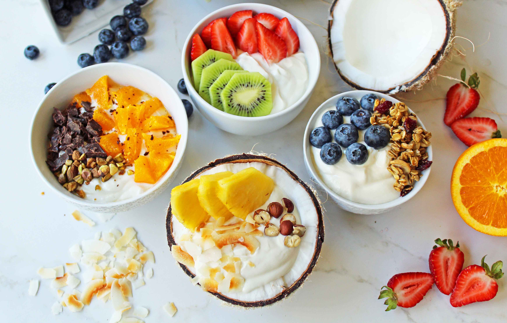

Protein Yogurt Bowl

Description
Indulge in a nutritious and satisfying breakfast with our Protein-Packed Yogurt Bowl recipe!
This delicious bowl combines creamy Greek yogurt with a variety of wholesome ingredients to
create a balanced and energizing meal that will keep you fueled throughout the day.
This recipe will get you at least 30g of protein depending on the yogurt, scoop size and topping choices.
Ingredients
- 200g Low Fat Greek Yogurt
- 1 scoop flavoured protein powder (I have been enjoying cinnamon roll flavour)
- Toppings of choice (e.g. peanut butter, fresh or frozen fruits, applesauce, nuts, chocolate sauce, honey, coconut chips)
Steps
- Measure out the greek yogurt in a bowl
- Measure out the protein poweder into the same bowl
- Carefully mix the two together, ensuring not to spill the protein powder outside
- Once evnly mixed, decorate the desired toppings to the top
- Devour